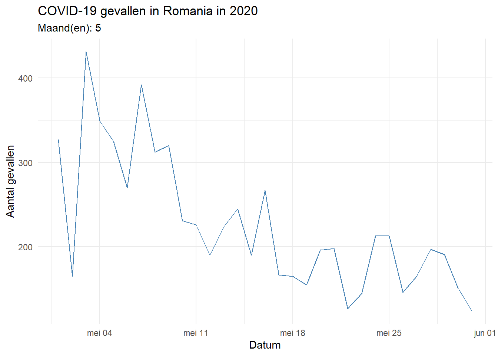
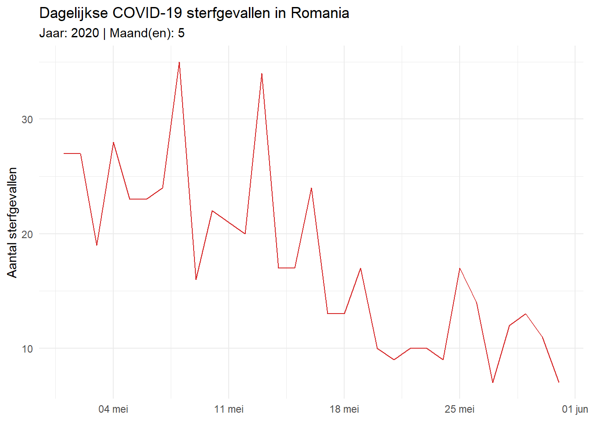

9 Geparameteriseerd COVID-19 Europa rapport
9.1 Geparameteriseerd data verwerken
In dit hoofdstuk wordt het verloop van de COVID-19-pandemie geanalyseerd op basis van gegevens uit Europa. Het rapport is geparametriseerd, wat betekent dat je zelf kunt kiezen voor welk land, welk jaar en welke maand(en) je de informatie wilt bekijken. Op basis van deze keuzes worden de relevante gegevens gefilterd en weergegeven in grafieken.
Er worden twee kerncijfers gevisualiseerd:
- Het aantal bevestigde COVID-19 gevallen per dag.
- Het aantal COVID-19 gerelateerde sterfgevallen per dag.
Deze aanpak maakt het mogelijk om snel en flexibel inzicht te krijgen in de ontwikkeling van de pandemie binnen een specifieke context.
9.1.2 Stap 2: Download en verwerk de data
De gegevens die in dit hoofdstuk worden gebruikt, zijn afkomstig van het European Centre for Disease Prevention and Control (ECDC). Deze dataset bevat dagelijkse meldingen van COVID-19 besmettingen en sterfgevallen in Europese landen. Bij het inlezen van de data worden datums correct geïnterpreteerd met behulp van het lubridate-pakket.
9.1.3 Stap 3: Foutafhandeling
Om te voorkomen dat het rapport fout loopt bij ongeldige invoer, zijn er controles ingebouwd. Deze controleren of het opgegeven land, jaar en de maanden daadwerkelijk voorkomen in de dataset.
# Land-validatie
if (!(params$land %in% unique(data$countriesAndTerritories))) {
stop("Het gekozen land komt niet voor in de dataset.")
}
# Jaar- en maand-validatie
if (!(params$jaar %in% unique(data$year))) {
stop("Het gekozen jaar komt niet voor in de dataset.")
}
if (!any(params$maanden %in% unique(data$month))) {
stop("Geen van de gekozen maanden komt voor in de dataset.")
}9.1.4 Stap 4: Filter de data
De data filteren op basis van het gekozen land, jaar en de geselecteerde maand(en).
9.1.5 Stap 5: Het analyseren van de data
De volgende grafiek toont het aantal bevestigde COVID-19 gevallen per dag in de opgegeven periode.
9.1.5.1 Aantal COVID-19 gevallen per dag
Analyse voor Romania - 2020
De volgende grafieken tonen de COVID-19 data voor:
- Land: Romania
- Jaar: 2020
- Maand(en): 5
# Maak een lijnplot van het aantal bevestigde gevallen per dag
ggplot(filtered_data, aes(x = date, y = cases)) +
geom_line(color = "steelblue") +
labs(title = paste("COVID-19 gevallen in", params$land, "in", params$jaar),
subtitle = paste("Maand(en):", paste(params$maanden, collapse = ", ")),
x = "Datum", y = "Aantal gevallen") +
theme_minimal()
Een stijgende lijn kan wijzen op een uitbraak of onvoldoende maatregelen. Afnemende waarden kunnen wijzen op doeltreffende interventies of onderrapportage. Houd er rekening mee dat testen en rapportagebeleid per land kunnen verschillen.
9.1.5.2 Aantal COVID-19 sterfgevallen per dag
De volgende grafiek toont het aantal bevestigde COVID-19 sterfgevallen per dag in de opgegeven periode.’
Analyse voor Romania - 2020
De volgende grafieken tonen de COVID-19 data voor:
- Land: Romania
- Jaar: 2020
- Maand(en): 5
ggplot(filtered_data, aes(x = date, y = deaths)) +
geom_line(color = "#d62728") +
labs(title = paste("Dagelijkse COVID-19 sterfgevallen in", params$land),
subtitle = paste("Jaar:", params$jaar, "| Maand(en):", paste(params$maanden, collapse = ", ")),
x = NULL, y = "Aantal sterfgevallen") +
theme_minimal() +
scale_x_date(date_labels = "%d %b")
9.1.5.3 Beschikbaarheid van gegevens
Hier bij wordt aangegeven hoeveel dagen data beschikbaar is voor de gekozen periode
# Toon hoeveel dagen data beschikbaar is voor de gekozen periode
paste("Aantal dagen met gegevens in deze selectie:", nrow(filtered_data))## [1] "Aantal dagen met gegevens in deze selectie: 31"9.2 🧠 Interactieve Quiz: Wat weet je van de COVID-data?
In dit onderdeel testen we je kennis van de geselecteerde gegevens. De antwoorden worden automatisch gegenereerd op basis van de data voor:
- Land: Romania
- Jaar: 2020
- Maand(en): 5
9.2.1 Vraag 1: Hoeveel dagen zijn er met gegevens in deze selectie?
## [1] "Aantal dagen met gegevens: 31"9.2.2 Vraag 2: Hoeveel besmettingen zijn er in totaal gemeld?
totaal_besmettingen <- sum(filtered_data$cases, na.rm = TRUE)
paste("Totaal aantal bevestigde gevallen:", totaal_besmettingen)## [1] "Totaal aantal bevestigde gevallen: 7017"9.2.3 Vraag 3: Wat was het hoogste aantal besmettingen op één dag?
max_cases <- max(filtered_data$cases, na.rm = TRUE)
max_datum <- filtered_data$date[which.max(filtered_data$cases)]
paste("Hoogste aantal besmettingen op één dag:", max_cases, "op", format(max_datum, "%d %B %Y"))## [1] "Hoogste aantal besmettingen op één dag: 431 op 03 mei 2020"